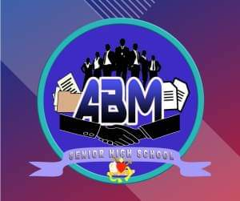

The Accountancy, Business, and Management Strand—or ABM strand—seeks to prepare the young business leaders of tomorrow. ABM strand paves the way for business-related college degrees. It teaches the basic concepts of financial management, accounting, and corporate operations. The programs under this strand aims to instill crucial skills that one needs to perform well in their future careers and businesses.
